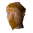

Galahad

| Config name | brother_galahad |
| NPC id | 218 |
| Combat level | hidden |
| Options | Talk-to |
| Wander range | 5 tiles from spawn |
| Movement | indoors |
| Defined in | scripts/quests/quest_grail/configs/fisher_realm.npc |
Galahad
A former Knight of the Round Table.
Show all 1 spawn on the world map → Open in knowledge graph →
Locations
| Area | Coordinates | Level | Count | Map |
|---|---|---|---|---|
| Coal Trucks | 2612, 3474 | 0 | 1 | view |
Dialogue
GalahadWould you like a cup of tea? I'll just put the kettle on.
Brother Galahad hangs a kettle over the fire.
PlayerI returned the Holy Grail to Camelot!
GalahadI'm impressed! That's something I was never able to do. Half a moment; your cup of tea is ready.
Sir Galahad gives you a cup of tea.
GalahadHow goes thy quest?
PlayerI now need to defeat a black knight titan. He seems invulnerable!
GalahadA black knight titan hmm? Haven't seen one of them about in a while...
GalahadYou'll need a special sword to defeat it, such as excalibur. You should be able to get that from the lady of the lake ...if you haven't already.
PlayerI have lost the holy table napkin...
Galahad gives you another table napkin.
GalahadLucky I had more than one, eh?
Galahad winks at you.
GalahadTry not to lose this one!
PlayerThank you. I shall continue with my quest.
GalahadHalf a moment, your cup of tea is ready.
GalahadWelcome to my home. It's rare for me to have guests! Would you like a cup of tea? I'll just put the kettle on.
Brother Galahad hangs a kettle over the fire.
PlayerAre you any relation to Sir Galahad?
GalahadI AM Sir Galahad.
GalahadAlthough I've retired as a Knight, and now live as a solitary monk. Also, I prefer to be known as brother rather than sir now. Half a moment, your cup of tea is ready.
PlayerDo you get lonely out here on your own?
GalahadSometimes I do, yes. Still not many people to share my solidarity with, as most of the religious men around here are worshippers of Saradomin. Half a moment, your cup of tea is ready.
PlayerI'm on a quest to find the Holy Grail!
GalahadAh... the Grail... yes... that did fill me with wonder! Oh, that I could have stayed forever! The spear, the food, the people...
PlayerSo how can I find it?
GalahadI did not find it through looking - though admittedly I looked long and hard - eventually, it found me.
PlayerWhat are you talking about?
GalahadThe Grail castle... It's... hard to describe with words. It mostly felt like a dream!
PlayerWhy did you leave?
GalahadApparently the time is getting close when the world will need Arthur and his knights of the round table again.
GalahadAnd that includes me.
GalahadLeaving was tough for me, so I took this small cloth from the table as a keepsake.
PlayerI don't suppose I could borrow that? It could come in useful on my quest.
Galahad reluctantly passes you a small cloth.
PlayerWhy didn't you bring the Grail with you?
Galahad...I'm not sure. Because... it seemed to be... NEEDED in the Grail castle? Half a moment, your cup of tea is ready.
PlayerWell, I'd better be going then.
GalahadHalf a moment, your cup of tea is ready.
Sir Galahad gives you a cup of tea.
GalahadIf you do come across any particularily difficult obstacles on your quest, do not hesitate to ask my advice.
GalahadI know more about the realm of the Grail than many, and I have a feeling you may need to come back and speak to me anyway...
PlayerI seek an item from the realm of the Fisher King.
GalahadFunny you should mention that, but when I left there I took this small cloth from the table as a keepsake.
Referenced in scripts
scripts/areas/area_seers/scripts/brother_galahad.rs2